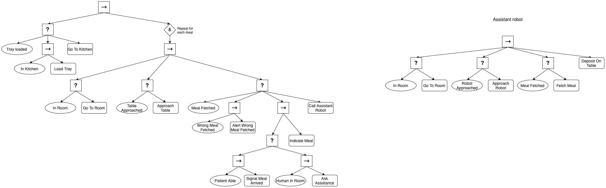
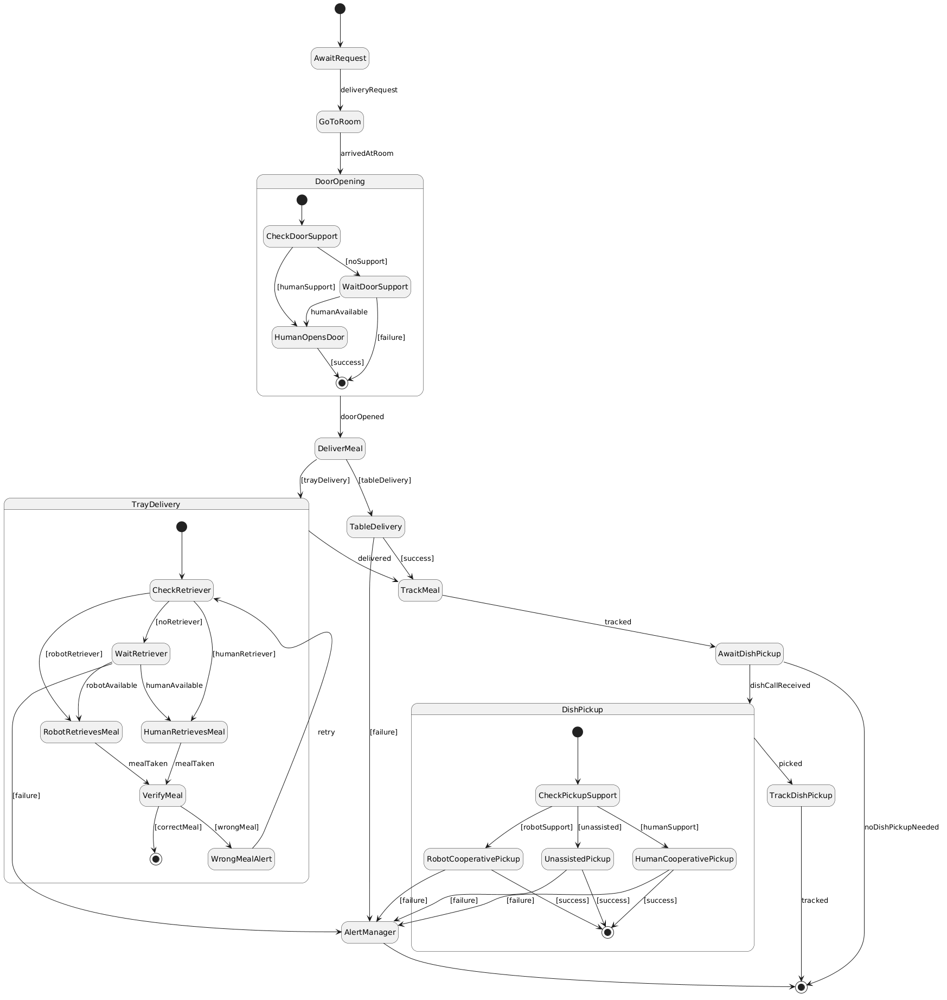
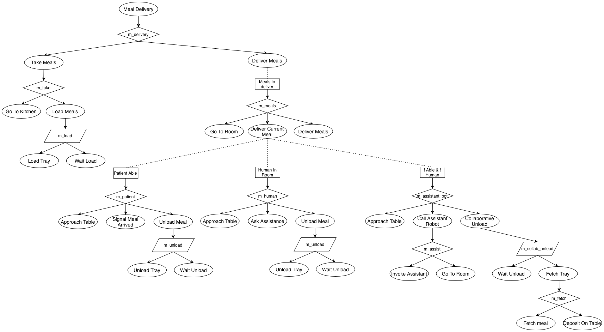
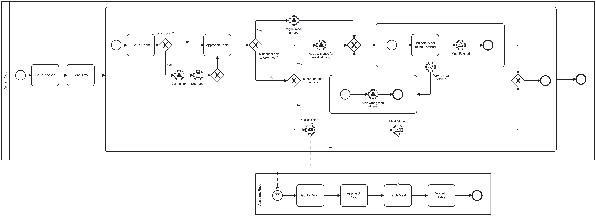

The system should deliver food from the kitchen to an inpatient room. The delivery is made on an order-by-order basis in response to kitchen delivery requests. The food can be delivered into a room table by the robot (requires a special manipulation robot skill) or the food can be fetched from the robot's tray. Fetching from the robot tray requires cooperation with the inpatient, a companion, a nurse, or another robot. Some inpatients could be unable to fetch the food from the tray, and a companion visitor or nurse could not be available at the moment of the delivery. The information about if the inpatient, a companion visitor or nurse can be able to retrieve the food from the tray can be obtained based on the inpatient record according to information about the patient and the presence of a companion into the room. This information is subject to uncertainty. The robot can carry multiple meals, in the case of a person retrieving the meal the robot should indicate which meal should be retrieved by a given inpatient. It should track when and where each meal was retrieved. The robot should alert if a wrong meal is retrieved. Dirty dishes should be retrieved from the room. As with delivery, the dish retrieve can occur unassisted, with the cooperation of two robots or with the cooperation of robots and a human. Opening the room door can involve cooperation with another robot or a human. Someone in the room can call a robot to pick up the dishes. In that case, that person can signal if they can open the door when the robot comes to it.
Askarpour, Mehrnoosh, et al. Robomax: Robotic mission adaptation exemplars. 2021 International Symposium on Software Engineering for Adaptive and Self-Managing Systems (SEAMS). IEEE, 2021.



